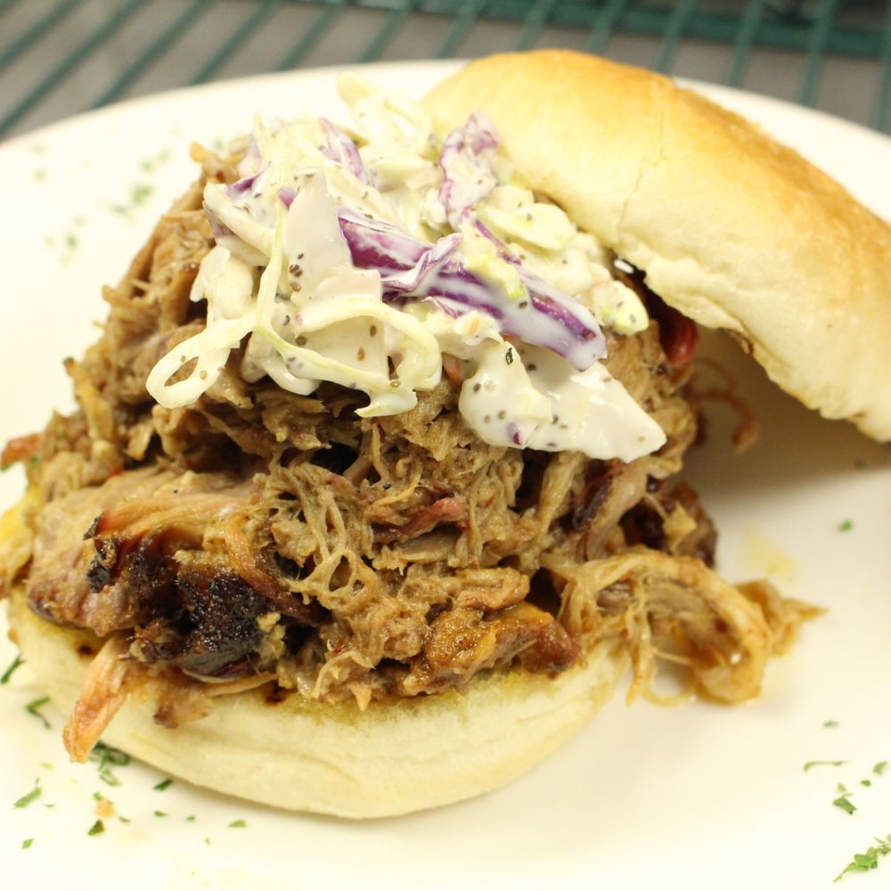
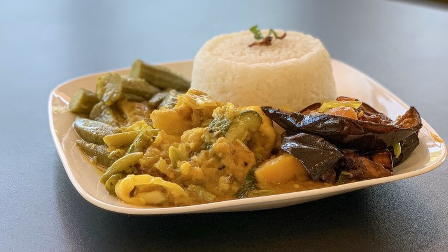
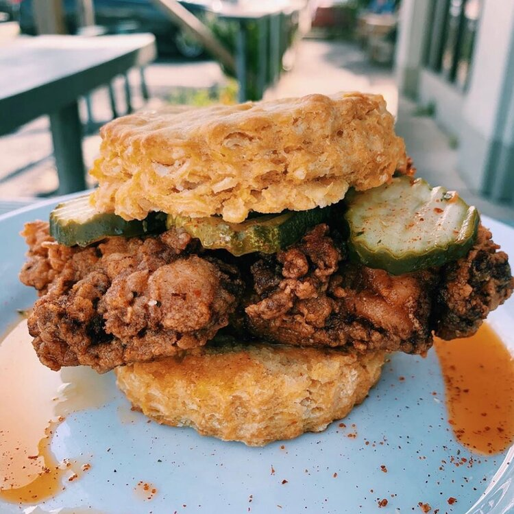
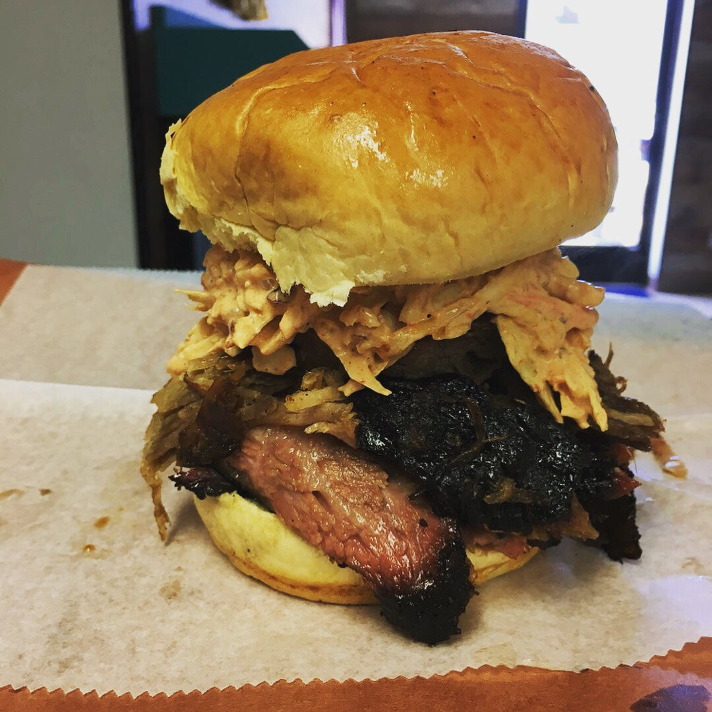

Norfolk
-
Maymar Poke & Grill - Serves traditional Filipino dishes with a Turo-Turo style setup and poké bowls that you can customize to your liking.

-
Penang Town - Serves traditional Malaysian cuisine with a modern touch using only the highest quality of fresh ingredients.

- Sam's Texas Sub Shop - A local sandwich shop that doesn't skimp on portions. 
- Bangladeshi Bistro - Bringing a taste of Bangladesh to Norfolk, they are owned and operated by a Muslim family who serves all halal food. 
-
Happy Cafe - Specializes in gourmet sandwiches, smoothies, bread pudding, and graduate donuts.

-
LeGrand Kitchen - Presents an ecclectic spin on American cuisine. Offers multiple gluten free options.

-
Chartreuse Bistro - A husband & wife owned and operated organic farm-to-table bistro located in the historic district in downtown Norfolk.

-
A World of Good - A small family owned restaurant that brings a whole new take on street food and casual dining. The cuisine focuses on the amazing street foods found in four major regions of the world: Latin America, North America, Southeast Asia, and the Mediterranean.

-
Mr. Shawarma - Owned by Avi, an Israeli immigrant, Mr. Shawarma serves authentic Middle Eastern street food using only the highest quality ingredients, including spices direct from Israel and halal meats.

- Handsome Biscuit - Sweet Potato Biscuit Sandwiches. "We like to make things taste good, but we are super small so our menu can only be so big. People love our fried chicken, and some go crazy for our lemon bars. But it might be the house soda which everyone loves. We got some ideas still locked up in the trunk!" 
Virginia Beach
- Blue Seafood & Spirits - Specialties include crab cakes, tempura fried shrimp, and seafood dishes based on a "Buy Fresh, Buy Local" philosophy.
- Mazari Kebab and More - Middle Eastern/Mediterranean joint serving Kebabs and Gyros with your choice of chicken, beef, or lamb. Vegetarian options are available.
- Duck Donuts - A family-owned donut shop serving vanilla cake donuts. You can order pre-made varieties or create your own!
- Kapers Catering and Eatery - A family-and-veteran-owned eatery serving up the finest tapas in Virginia.
- Dave's BBQ - Specializing in slow smoked perfection, we cook as much as we can everyday and occasionally we sell out early. The Texas style brisket usually sells out first. We offer all the favorites including spare ribs, pulled pork, smoked sausage, pulled chicken, and smoked chicken salad. 
- Masala Bites - Their spices are toasted and ground in house, which enables them to make their own unique blends. The seasoned team of chefs strive to represent and redefine India’s vast culinary repertoire.
- Sakatomo Sushi - A simple restaurant serving fresh sushi, sashimi, and ramen.
- Pa'l Carajo Arepa Lounge - Owned by four Venezuelan immigrants, Pa'l Carajo serves up arepas, empanadas, cachapas, pabellón, patacones, parrillas and more.
- Carib Shack - As seen on Food Network's Diners, Drive-Ins, Dives, Carib Shack delivers a fast and fresh take on Carribbean cusisine to the Virginia Beach area.
- Noodle Man - Only established in 2018, Noodle Man serves up the best fresh made, hand-pulled noodles in Virginia.
Williamsburg
- Rick's Cheese Steak Shop - Their specialty is cheesesteaks, but they also serve cheeseburgers, chicken fingers, and club sandwiches.
- Foor For Thought - The décor features biographical pictures of inventors, scientists, and social leaders while the walls display thought-provoking quotes. The menu is diverse, with choices varying from classic American dishes, ethnic dishes, healthier vegetarian, or one of the nightly seafood specialties.
- Amber Ox Public House - Here, you'll discover a mix of eclectic, elevated and unexpected dishes - many of which pay ode to classic Southern fare. But with a contemporary twist. They place a spotlight on crafting fresh seasonal dishes that feature the best regionally sourced produce and ingredients available.
- Fat Canary - Refined, green-walled bistro serving upscale American fare & wines, with a cheese shop & patio.
- Giuseppe's - Giuseppe’s offers gourmet individual pizzas, delicious soups and salads and an array of pasta dishes.
- Casa Pearl - Casa Pearl focuses on quality locally-sourced ingredients, seasoned culinary expertise, and gracious customer service. The raw bar features many of the delicious fish and shellfish that the Chesapeake Bay region has to offer. Tacos are Latin-inspired, but with a southern twist.
-
Second Street American Bistro - A welcoming and relaxing place to enjoy some great American food with an eclectic twist and a glass of award-winning wine.

- Shorty's Diner - A family owned and operated diner using their family's recipes, Shorty's offers homemade soups and salad dressings, fresh whipped cream on French Toast and cakes, and only the best quality meats and cheeses. Also enjoy soft serve ice cream, sno-balls, milkshakes, malts and more!
- Le Yaca - Originally founded in the French Alps in 1962, Le Yaca is a local favorite known for its hospitality and fine French dining.
- Waypoint Seafood and Grill - The Waypoint menu is a celebration of Chesapeake ingredients and includes items grown at local farms and caught in regional waters. The pure flavors and rich ingredients presented in the seasonally changing entrees represent modern regional American cuisine with classical culinary roots.